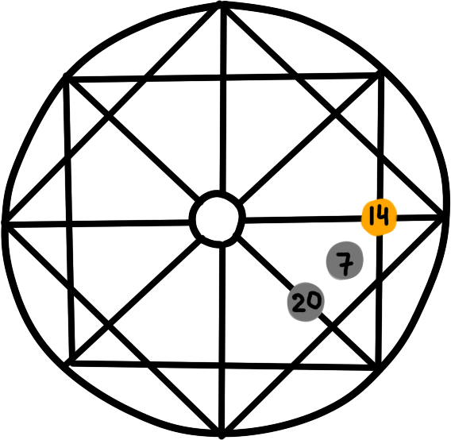

Расшифровка денежного канала
3 аркан - Императрица
Человек с 3 Арканом в денежном канале склонен к хорошей денежной карме. Императрица — это знак плодородия. И задача такого человека хорошо ориентироваться в деньгах и бизнесе. Люди с 3 Арканом в плюсе становятся богатыми. Они умеют делегировать свои полномочия и оплачивать другим за выполнение работы. Императрица способна создать империю — на кухне или в стране
5 аркан - Иерофант
Человеку даются деньги, когда он получает новые знания и передает их. Человек не должен быть зациклен на старых догмах.
5 Аркан на входе в денежный канал:
Все, что связанно с порядками, правилами, законом и устоями, аналитикой и цифрами. Математики, инспекторы, судебные приставы, коммерческие директоры, коммерческие консультанты, финансисты, экономисты, страховые агенты. Деньги могут идти через политику, создание новых законов и методик, духовное учительство.
Что блокирует энергию:
Блокируется энергия, когда человек не делится своими знаниями. Когда не учит, а поучает.
6 аркан - Влюбленные
Энергия безусловной любви. Деньги приходят через любовь и прекрасное. Человек должен любить свою профессию больше, чем деньги. По 6 Аркану деньги приходят через косметологию, красоту, дизайн, художественное искусство, коммуникацию, организацию людей, умение сплочать людей и направлять их. Это прекрасные менеджеры по продажам, коммуникаторы, которые умеют сводить других людей, собирать вокруг себя множество людей и организовывать различные мероприятия.
6 Аркан на входе в денежный канал:
Что блокирует энергию:
Идеализация других (когда человек отказывается от любви к другому из-за того, что тот не соответствует какому-то выдуманному образу). Нелюбовь к себе (когда человек считает, что он не достоин чего-то лучшего- статуса, денег. Проблемы с принятием денег и подарков).
7 аркан - Колесница
Энергия воина-победителя. Люди 7 Аркана умеют ставить перед собой цели и вовремя достигать их. Необходимо стремиться расширить свой денежный поток. Четко видеть, какие суммы вы хотите иметь. Ставьте перед собой цели и достигайте их. Проверки будут идти на умение строить команду и вести людей за собой. Вы должны стать лидером, вдохновлять людей и таким образом организовывать, чтобы они чувствовали себя комфортно.
7 Аркан на входе в денежный канал:
Все профессии, связанные с движением, машинами, командировками. Логисты, экспедиторы, машинисты в поездах, стюардессы, гонщики, водители, мореходы, таксисты. Все виды спорта. Так как это энергия воина, могут быть еще такие профессии: милиция, исполнительные службы, гаи, судьи, силовики, СБУ, эксперты-криминалисты, телохранители, юристы. руководители среднего и высшего ранга.
Что блокирует энергию:
Воинственный настрой, желание жестко отстаивать свою точку зрения. Не продавливайте и не стройте козни конкурентам, а помогите им.
8 аркан - справедливость
Если 8 Аркан — одна из энергий, которая находится на денежном канале — старайтесь проявлять справедливость в плане обращения с деньгами. Если 8 Аркан в плюсе, то нет перекоса между «брать» и «отдавать». человеку не кажется, что у него все время что-то берут, но ничего не дают в замен. Если 8 Аркан в минусе — человек попадает в долги и кредиты, ему кажется что вокруг воры и мошенники, ему кажется что все очень дорогое и он постоянно живет в подавленном состоянии.
8 Аркан на входе в денежный канал:
Все профессии, связанные с поиском справедливости. Правозащитники, правохранители, юристы, правоведы, историки, хорошие журналисты, работники налоговой, спецслужб, гаи, милиции, политики, общественные деятели, революционеры, кассиры, секретари, психологи и целители (которые разбираются в законах кармы).
Что блокирует энергию: непонимание причинно-следственных связей.
9 аркан - Отшельник
Энергия мудреца и отшельника. Если 9 Аркан — одна из энергий на денежном канале, то деньги к человеку приходят через мудрость, аналитические способности. Это хорошие аналитики, ученые, врачи. В минусе — это неумение открыться миру, замкнутость, боязнь быть осмеянным, интеллектуальная и духовная гордыня. Девятки склонны экономить на себе — это так же минус энергии. Они не приобретают себе то, о чем мечтают, выбирают самое дешевое. Нужно отказаться от экономии. Если вы потратите деньги с любовью на себя, вы наоборот усилите денежный поток.
9 Аркан на входе в денежный канал:
Это профессии: переводчик, филолог, биолог, лингвист, айтишник, антрополог, компьютерщик, экономист, журналист, писатель, этнограф, исследователь, научный работник, библиотекарь, инженер, священник. Вам следует заниматься исследованиями и отдавать знания в мир.
Что блокирует энергию: энергия блокируется, если человек считает себя умным, а других «недалекими» и презирает за это (интеллектуальная гордыня). Если человек с презрением относится к материальному миру. Неуверенность в себе и ценности своих знаний. Недоверие к людям. Чрезмерная экономия на себе.
10 аркан - Колесо Фортуны
Энергия потока и удачи. Людям с 10 Арканом деньги приходят легко. Другим может показаться, что человек для этого вообще ничего не делал. Для того, чтобы деньги к такому человеку приходили — ему необходимо решить самую сложную задачу: он должен расслабиться и получать удовольствие. Зачастую, люди с 10 энергией не могут расслабиться.
10 Энергия на входе в денежный канал:
Десятки — это не лидеры, как 3, 4 и 7. Они поддерживают какого-то лидера. И любой проект способен принести 10 денежный поток. Все начинает крутиться вокруг человека. Он хорошо работает с людьми в любых коллективах, способен организовывать, оказывать поддержку лидерам. Это хорошие заместители и помощники лидеров, исполнители.
Человеку присуща энергия мягкости. Такие люди легки на подъем. Он с радостью выбирает все, что связанно с движением и общением. Танцоры, работники в сфере туризма, водители, менеджеры, тренеры, консультанты, брендменеджеры, пиарщики, работники казино. Так же делопроизводство и сферы, связанные с большими коллективами.
Что блокирует энергию: лень способна полностью перекрыть финансовый поток.
11 аркан - Сила
Энергия силы и потенциала. Это люди, способные много работать на износ. Энергия чем-то сходна с энергией 7 Аркана. Если 7 Аркан — давление на других людей, то 11 Аркан, в основном, давление на себя. Трудоголизм — главный минус 11 Аркана. Такой человек, если идет к цели, ничего вокруг не видит и видеть не желает.
11 Энергия на входе в денежный канал:
У людей 11 Аркан очень много сил и энергии. В основном, они выбирают работу, связанную с физическим трудом, спортом и движением. Это спортсмены, гонщики, спасатели, пожарные, организаторы, политики, директора, организаторы мероприятий, руководители предприятий, строители, специалисты по ремонтным работам. Там, где нужно много работать, применить силу, управлять людьми.
Что блокирует энергию: блокировка, зачастую, идет через болезнь. Когда человек уже не способен быть трудоголиком — перекрывается финансовый поток.
12 аркан - Повешенный
Энергия человека нового виденья, энергия служения. Деньги человеку приходят через творчество. человек с 12 энергией видит все не так,как другие. Для него важно заботиться о других и оказывать помощь другим людям.. Очень важно найти такую профессию, которая бы способствовала этому.
Минус 12 Аркана — это восприятие себя как жертвы. Такое случается когда человек занимается служением другим, но на каком-то этапе не получает обратной связи. Из-за этого он впадает в состояние жертвы. Ему следует научиться говорить нет, когда не хочется нагружать себя чужой работой.
Еще один важный момент — необходимо брать деньги за работу. Такой человек готов работать бесплатно или за копейки, а потом обижается что его не оценили и не поблагодарили за труд. По закону Вселенной работа должна быть оплачиваемой, так как должен происходить обмен энергий.
12 Аркан на входе в денежный канал:
Все творческие профессии. Социальные сотрудники, работники благотворительных фондов, врачи, воспитатели, зоологи, ветеринары, актеры, пиарщики, радиомеханики, изобретатели.
Что блокирует энергию: состояние жертвы. Неумение говорить нет.
13 аркан - Смерть
Перед человеком с 13 Арканом ставится задача — научиться отпускать все старое и отжившее, привлекая новое в жизнь. 13 Аркан имеет какое-то сходство с 7 и 11 Арканом.
13 Аркан на входе в денежный канал:
Такой человек может связать себя с экстремальной профессией. Он способен пребывать между жизнью и смертью. Военные, силовики, мчс, гинекологи, врачи, патологоанатомы, перинатальные психологи, работа с новорожденными.
Что блокирует: застой в профессии может блокировать энергию. Вы должны постоянно находить что-то новое в своей профессии, или же необходимо будет сменить профессию.
14 аркан - Умеренность
Ярко выражен 14 Аркан у людей, которые понимают мир посредством своей интуиции. Это люди достаточно творческие, тянутся к прекрасному. Они умеют делать деньги через творчество. Умеют открывать душу и выражать себя через произведения искусства. Человеку постоянно будут идти проверки, его постоянно будут испытывать: а действительно ли он занимается тем, что желает его душа. Поэтому задача человека — идти за своим сердцем.
14 Аркан на входе в денежный канал:
Деньги будут приходить через творчесство: художник. искусствовед…14 Аркан — это так же энергия воды и природы. Поэтому подойдут так же такие профессии: аптекарь, знахарь, травник, биолог, мореход, капитан. Важно проявлять душевность на работе — это открывает финансовый поток.
15 аркан - Дьявол
В 15 Аркане есть качества всех Арканов души- как самые позитивные, так и негативные. 15 Аркан говорит о том, что в жизнь человека могут приходить достаточно большие деньги. Вопрос только в другом — каким они путем придут: честным через труд человека, или же они будут получены легким путем, через мошенничество, через преступление законов. Очень важно, чтобы человек преодолел в себе все привязанности, но принимал деньги. Его будут искушать большими деньгами и будет идти проверка на гордыню. Дьявол может неожиданно давать деньги. Но если человек искусился, не прошел проверку на тщеславие, обманывает, отнимает ресурсы у других, зарабатывает нечестным путем — дьявол может забрать все.
15 Аркан на входе в денежный канал: профессии, посредством которых можно помочь другим избавиться от зависимостей. Психотерапевты, психологи; управленцы, которые могут основать бизнес. Управляющие большим количеством людей. Где большие деньги — там можно найти людей 15 Аркана. Банкиры, политики, финансисты, работники казино, пиарщики.
16 аркан - Башня
Если 15 Аркан — это человек,который ходит по краю пропасти, то 16 Аркан- это человек, который летит в пропасть. Другое дело, что он «наработал», что его ожидает внизу.
Если у человека с 16 Арканом денег нет — значит, он зацепился за мир материи. В желании материальных благ нет ничего плохого, если помимо этого он интересуется еще чем-то.
16 Аркан на входе в денежный канал:
Профессии, связанные с полной трансформацией. В человеке есть энергия поменять все, полностью разрушить старое и отжившее и выстроить все заново. Это строители, архитекторы, создатели всего с нуля, кризис-менеджеры, режиссеры.
17 аркан - Звезда
Человек 17 Аркана зарабатывает деньги своим творчеством и творчество вносит в свой бизнес. 17 Аркан — это все творческие профессии и умение сделать свой бизнес творческим. Тогда человек реализуется в социуме, финансово и творчески. Будут идти проверки на звездную гордыню. Как только он начинает считать, что его творчество самое лучшее, а у других никчемное — его перестанут признавать и будут всячески лечить от гордыни.
17 Аркан на входе в денежный канал:
Профессии: танцор, дизайнер, актер, артист, журналист, редактор, организатор выставок, тренер личностного роста, иллюстратор, мультипликатор, режиссер, энергетик. Так же целительство, лекарство, врачевание (похож на 14 программу судьбы). Создание творческого продукта.
18 аркан - Луна
Это так же очень творческие люди.Они умеют воплощать свои образы, визуализации в жизни. Но 18 Аркан так же связан со страхами. И если у человека есть боязнь безденежья — это так же материализуется.
18 Аркан на входе в денежный канал:Все творческие профессии.Психолог, фокусник, маг, фотограф, дизайнер, биоэнерготерапевт, работник телевидения, визажист, модельер, стилист, косметолог. Все, что связанно с визуализацией и магией (как в прямом, так и переносном смысле слова).
19 аркан - Солнце
Это люди, которые умеют обогревать своим светом большое количество людей. Хорошие организаторы, прирожденные лидеры. Люди к ним тянуться. Деньги приходят через понимание высших законов бытия. Важно помнить, что отдавая деньги на благотворительность — вы приумножаете их, финансовый поток увеличится. Создавайте для людей рабочие места, дайте им возможность расти и зарабатывать вместе с вами.
19 Аркан на входе в денежный канал:
Это общественные деятели. Люди, которые любят выступать на широкую публику. Превосходные ораторы, артисты, мотивационные спикеры, политики, меценаты, миссионеры, руководители фестивалей, продюсеры, певцы, музыканты, топменеджеры, лидеры сетевого маркетинга. Продавцы, дипломаты, преподаватели, художники, руководители, менеджеры по продажам, духовные лидеры. Там где есть деньги, большое количество людей, внимание и служение.
Что блокирует энергию: чувство вины (к примеру, мысли: другие голодают, а у меня все хорошо). Придирки к другим и гиперконтроль. Гордыня.
20 аркан - Суд
Задача таких людей проработать родительские установки. В основном, это то, что «деньги достаются только тяжелым трудом». Проанализируйте, как ваши родители относились к деньгам. Возможно, они считали что честным путем не заработаешь больших денег или они вовсе не верили в возможность разбогатеть. Отследите, нет ли в вас подобных программ, Простите родителей и не осуждайте их. Чем больше осуждаете родителей — тем больше блокируете денежный поток.
20 Аркан на входе в денежный канал:
Семейный бизнес. Все, что связанно с передачей, обработкой и получением информации. Журналисты, телеграфисты, почтальоны, операторы call центров. Специалист по грудному вскармливанию, стоматолог, патологоанатом, акушер, медиум, копирайтер, работник телевидения, редактор, пиар менеджер, программист.
Что блокирует энергию:Осуждение родителей, плохие отношения с родителями.
21 аркан - Мир
Людям с 21 Арканом на денежном канале необходимо ставить перед собой большие финансовые цели. Они могут зарабатывать в любой точке мира, путешествовать и не иметь ограничений. Человек с 21 Арканом должен заниматься миротворческой деятельностью, объединять и мирить людей. Ему нельзя заниматься реализацией и производством товаров, которые вредят здоровью человека (продукты с вредными пищевыми добавками, сигареты, алкоголь, фармацевтика…).
21 Аркан на входе в денежный канал:
Подойдут любые профессии, главное чтоб в них был размах, было где развернуться. Связанные с путешествием, сотрудничеством с разными городами и странами. Это хорошие политики и дипломаты, журналисты, политики, дипломаты, журналисты, политические обозреватели, эксперты по политике. Географы, правозащитники, артисты и актеры.
22 аркан - Глупец
Это человек, познавший все мирские привязанности и сумел возвыситься над ними. Задача такого человека — создать финансовую независимость в жизни. Но следует правильно понимать, что такое финансовая независимость. Что это такое? Это, прежде всего, состояние, когда ваш пассивный доход выше расходов. Пассивный доход — это то, что приносит доход без вашего участия. Вам постоянно будут идти проверки на зацепку за деньги, насколько легко вы их впускаете в свою жизнь и отпускаете их.
Человеку не рекомендуется работать на работе, где фиксированный график. Человек должен быть сам себе хозяином. Он любит работу на результат, но всякие рамки и ограничения для него не приемлемы.
22 Аркан на входе в денежный канал:
Политика, организация праздников, туристический бизнес. Это шуты, клоуны, аниматоры, хареографы, преподаватели йоги, ведущие на телевидинье, промоутеры, общественные деятели. Для человека 22 Аркана важна не профессия, а чувство свободы в ней; то, что ему хорошо оплачивают труд и он свободно тратит деньги, с легкостью впуская их в свою жизнь.